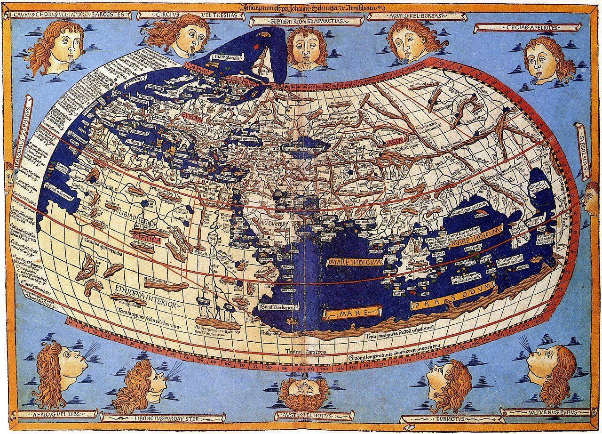
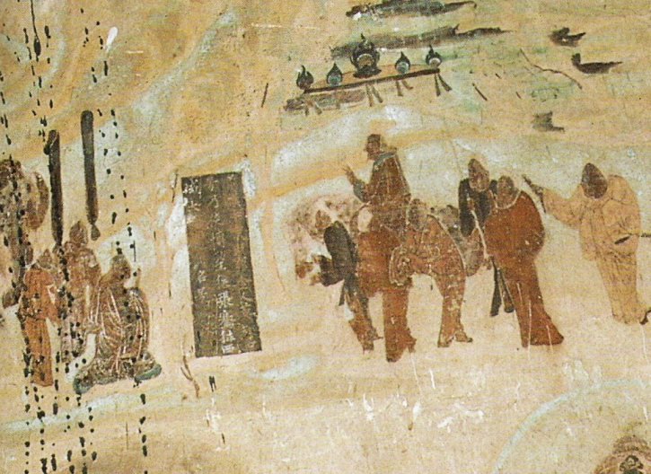
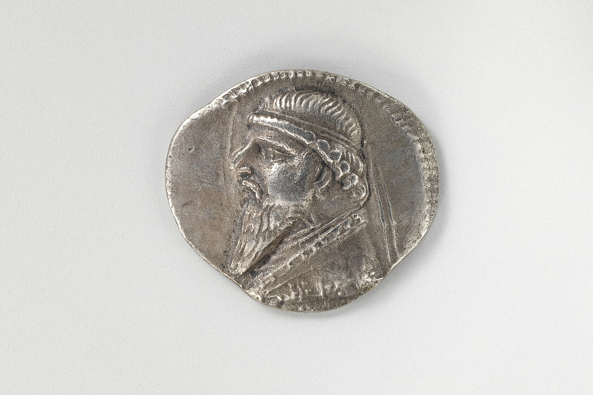
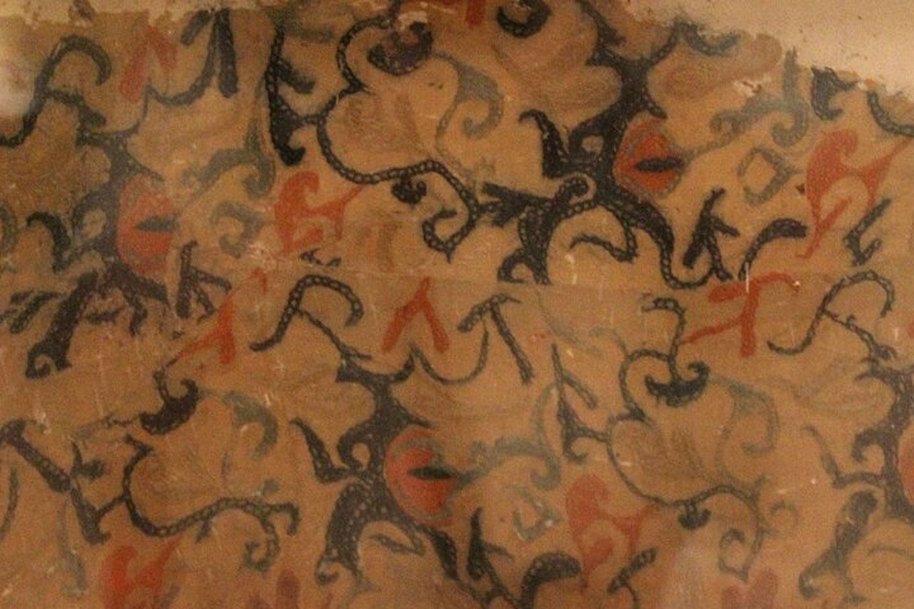
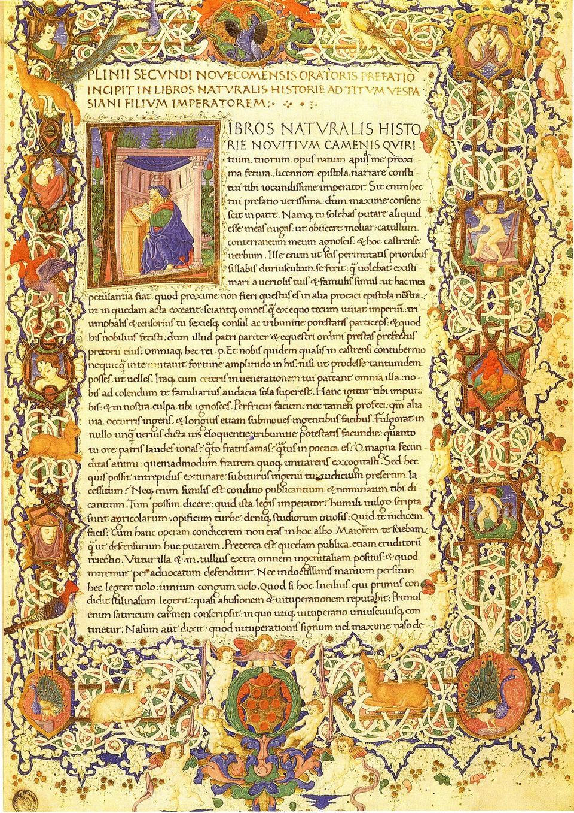
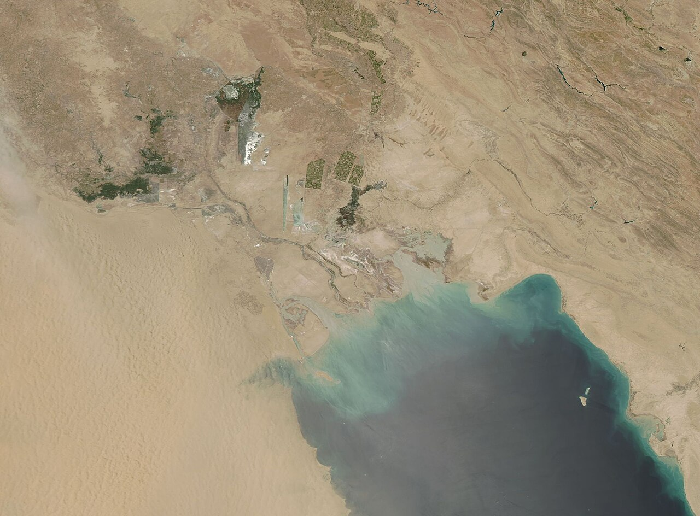
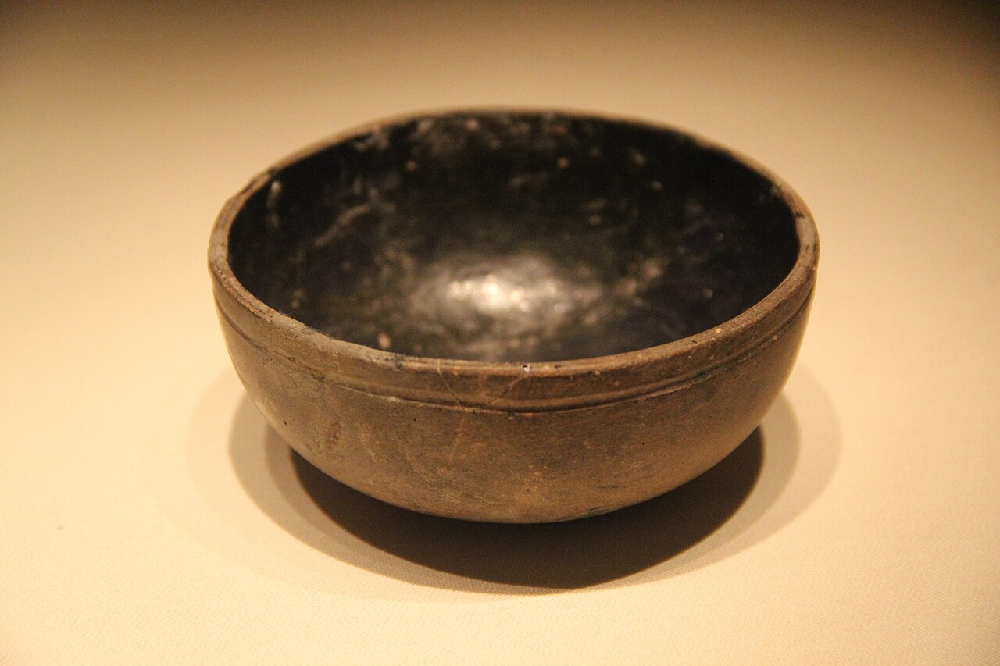

ローマ、16年。元老院は、男が絹の服を着ることを禁じました。絹の服を、ぜいたくでみだらだと嫌う人もいました。それでも絹は、ローマに流れこみ続けます。ローマ人はこの布が「セレス」の国から来ると考えていましたが、その国がどこにあるのか、はっきりとは知りませんでした。
同じころ、ユーラシアの反対側の端には漢がありました。2つの大きな帝国は、200年あまり同じ時代を生きました。漢とローマは、おたがいのことを知っていたのでしょうか。

同じ時代にユーラシアの両端で栄えた2つの帝国は、絹やガラスを取り引きしながら、一度もきちんと顔を合わせられませんでした。漢の使いは海の手前で引き返し、ローマ人は絹が木の葉からとれると思っていたのです。地図と年表で、そのすれ違いをたどってみませんか。
前回は、前221年に秦の王（始皇帝）が戦国の国々を1つにまとめ、文字・はかり・貨幣・車軸の長さをそろえて、郡県制で全国を役人に治めさせた話でした。秦は15年ほどで滅びますが、漢（劉邦）がしくみを引き継いでやわらげ、約400年続きます。その漢の武帝が、張騫を西へ送りました。
ローマ、16年。元老院は、男が絹の服を着ることを禁じました。絹の服を、ぜいたくでみだらだと嫌う人もいました。それでも絹は、ローマに流れこみ続けます。ローマ人はこの布が「セレス」の国から来ると考えていましたが、その国がどこにあるのか、はっきりとは知りませんでした。
同じころ、ユーラシアの反対側の端には漢がありました。2つの大きな帝国は、200年あまり同じ時代を生きました。漢とローマは、おたがいのことを知っていたのでしょうか。
知ってはいたが、間の国を通したうわさと品物を通してだけだった。
話は、ローマの絹の禁止より150年ほど前にさかのぼります。漢の北では、馬に乗って暮らす遊牧民の匈奴（きょうど）が強い力を持ち、たびたび漢に攻めこんでいました。漢の皇帝・武帝は、匈奴をはさみうちにする仲間を、西に探そうと考えます。
前139年ごろ、張騫（ちょうけん）は100人ほどを連れて西へ旅立ちました。めざしたのは、かつて匈奴に追われて西へ移った大月氏（だいげっし）という人々です。ところが一行は途中で匈奴に捕まり、張騫は10年以上引き留められてしまいます。
張騫はすきを見て逃げ、中央アジアのフェルガナ盆地を通って、大月氏にたどり着きました。けれども、新しい土地に落ち着いた大月氏に、匈奴と戦う気はありません。張騫は役目を果たせないまま、出発から13年ほどたって漢に帰ります。

張騫が持ち帰ったのは、同盟ではなく知らせでした。西には、町に住み、田畑を耕す大きな国々がある。その一つが、いまのイランを中心とする安息（あんそく）、つまりパルティアです。
張騫自身はパルティアを訪ねていませんが、こう伝えました。大小数百の町があり、ぶどうから酒を造る。王の顔を刻んだ銀貨を使い、王が亡くなると、次の王の顔の貨幣に作り直す。字は、横長の革に書く。

漢はこのあと西へ使いを次々と送り、パルティアの王のもとにも使節が届きます。ただ、張騫の報告に出てくる西の果ては、パルティアのさらに西の「条枝（じょうし）」まで。いまのイラクのあたりの国とされます。ローマの名は、まだありません。
ちなみに、張騫が訪ねた大月氏の一派は、1世紀にクシャーナ朝を建てたとみられています。いまのアフガニスタンから北インドまでを治め、漢とパルティアのあいだに立つ大国になりました。
そのころローマは、第9話で見たとおり、地中海をぐるりと囲む国になっていました。ローマで絹がめずらしい品だったのは前1世紀まで。1世紀には、ずっと手に入りやすくなります。けれども、その作り方は知られていませんでした。
ローマの学者プリニウスが77〜79年ごろにまとめた百科事典『博物誌』には、こうあります。セレスの人々は、森の木の葉に生える白い綿毛を水にひたし、くしでとかし取る──。絹は、木からとれるものだと考えられていました。
プリニウスは、お金の流れも嘆きました。インドとセレス、アラビアの品のために、ローマから毎年大金が出ていく、と。ただ、ローマのお金を多く吸いこんだのは、絹よりもインドの香辛料だったとみる歴史家もいます。


そもそも「セレス」が中国のことだとも限りません。ローマの書き手の多くは、セレスがどこにいるのかよくわかっておらず、インドから中央アジアの人々まで、この名で呼ぶことがありました。
2世紀の地理学者プトレマイオスは、陸の道の先にある「絹の国（セリカ）」と、海から行く「シナイの国」を、別々の国として地図に描いています。扉の地図は、その地図を15世紀に描き直したものです。
ローマの商人が向かったのは、インドでした。季節風（季節で向きを変える風）に乗って、紅海の港ベレニケから、インドの港ムジリスへ渡ります。1世紀の案内書『エリュトゥラー海案内記』には、絹は陸の道でバクトラ（いまのアフガニスタン北部の町）へ、またはガンジス川を下ってインドへ運ばれ、売られたとあります。
そのころ漢は、いったん途絶えたのちに立て直され（後漢）、都は東の洛陽に移っていました。漢の側でローマにいちばん近づいたのは、1世紀の終わりの甘英（かんえい）です。
甘英を送り出したのは、将軍の班超（はんちょう）。73年から30年近く西域（いまの中国・新疆のタリム盆地にあったオアシスの国々）にとどまり、94年までにその国々を漢に従わせた人です。
97年、班超は甘英を「大秦（だいしん）」へ送ります。漢の人々がローマを呼んだ名です（名前のわけは、最後に）。甘英はパルティアを通り抜け、西の果ての条枝にある、大きな海のほとりまで来ました。いまのペルシア湾の奥、カラケネのあたりとする見方があります。
海を渡ろうとする甘英に、パルティアの西の境の船乗りたちは言いました。海はとても広く、風がよければ往復3か月。風が悪ければ2年かかる。だから海に出る者は3年分の食料を積む。海の上では故郷が恋しくなり、命を落とす者もいる──。甘英は、ここで引き返しました。

実は、ユーフラテス川に沿って北西へ進めば、ローマとの境のシリアまでは数週間ほどでした。甘英はそれを知らず、アラビア半島を船で回って、ローマの治めるエジプトへ行こうとしていたという見方もあります。
後漢書（後漢の歴史を5世紀にまとめた本）は、大秦の王はいつも漢に使いを送りたがっていたが、パルティアが漢の絹の取り引きを握ろうとして、あいだをさえぎった、と書いています。いまの歴史家も、パルティアやクシャーナ朝が仲立ちのもうけを守ろうとして、直接のつながりを妨げたとみています。
それでも甘英は、聞き集めた大秦のようすを持ち帰りました。国の広さは数千里、石の城壁をめぐらせた町が400あまり。白く塗った宿場が道に並び、金や銀、さんご、こはく、ガラスがとれる。地中海のさんご採りの話は、かなり正確だったといいます。
王の話は、半分だけ合っています。大秦の王は代々受け継ぐのではなく、すぐれた人を選んで立て、災いが起きると取り替える。退けられた王は怒りもしない──。
選んで立てるところは、ちょうどこのころ始まった、すぐれた人を養子にして跡を継がせるローマのやり方と似ています。甘英が旅した97年にも、皇帝ネルウァがトラヤヌスを養子にしました。けれども、災いが起きたからといって退けられた皇帝はいません。
甘英から69年後の166年。後漢書は、大秦の王「安敦（あんとん）」の使いが、漢の南の端・日南（いまのベトナム中部）の外からやって来たと記します。差し出したのは、象牙、犀（さい）の角、べっこう。これで初めて両国が通じた、と書かれています。
安敦は、ローマ皇帝アントニヌス・ピウスか、その養子のマルクス・アウレリウス・アントニヌスのこととされます。ピウスは161年に亡くなっているので、166年ならマルクス・アウレリウスの時代です。
ただ、後漢書自身が首をかしげています。贈り物に、大秦ならではの珍しい宝がない。話が大げさに伝わったのではないか、と。品はどれも南アジアで手に入るものでした。この一行は皇帝の使いではなく、使いを名のったローマの商人たちだろう、とみる歴史家が何人もいます。
海の道の手がかりは、地面からも出ています。ベトナム南部、メコン川の三角州にあるオケオの遺跡からは、1940年代に、アントニヌス・ピウスとマルクス・アウレリウスの時代のローマの金のメダルが見つかりました。ただし、メダルはインドの商人が持ちこんだだけかもしれず、ローマ人が来た証拠とまではいえません。
時代はさかのぼりますが、漢の墓からも、地中海のガラスが出ています。広州（いまの広東省）の前漢の墓から出た青いガラスの碗は、前1世紀のはじめのもので、中国で見つかったローマのガラス器の最初の例とされます。インド洋と南シナ海を回って届いたのかもしれません。

ところが、安敦の使いが来た166年ごろ、ローマでは疫病（アントニヌスの疫病）が広がり、インド洋での商売は大きく落ちこみます。漢でも151年から疫病がくり返していました。そして漢は220年に滅びます。
ふり返ると、漢とローマは、おたがいがいることを知っていました。ローマは絹を通して、漢は甘英が聞いた話を通して。けれども、あいだにはパルティアやクシャーナ朝、インドの商人たちがいて、知らせも品物も、いくつもの手を渡って届きました。皇帝どうしが使いをやりとりしたと確かめられる記録は、残っていません。
1年にエジプトの港からインドへ向かった船アウグストゥスの時代。地理学者ストラボンの記録による
インド・セレス・アラビアの品のため、ローマから毎年出ていったお金単位はセステルティウス（ローマのお金）。プリニウス『博物誌』の見積もり
大秦がパルティアやインドとの海の交易で得たもうけ後漢書の記録。原文は「利有十倍」
後漢書は、大秦という名のわけをこう書きます。その国の人々はみな背が高く、まっすぐで、中国の人に似ている。だから大秦と呼ぶ──。第10話で見た秦の名に「大」を付けた、いわばもう一つの中国という名づけでした。
ローマの側にも、セレスの姿を伝えた話があります。プリニウスによれば、皇帝クラウディウスのもとに来たスリランカの使いが、セレスの人々はふつうより背が高く、髪は亜麻色で、目は青いと語ったそうです。
ただ、描かれた姿は、両端の国の人々ではなかったようです。後漢書の大秦の記事は、ほとんどがローマの東の端、シリアのあたりの話。青い目のセレスも、中国の人ではなく、タリム盆地にいたインド・ヨーロッパ系の人々のことではないか、という見方があります。
おたがいが聞いた「相手」には、間に立つ人々の姿がまざっていました。うわさは、運んだ人の顔をして届いたのです。
遠い国のニュースを見聞きしたら、その話がどこで、誰の口を通って届いたのか、少しだけ思い浮かべてみてください。
疫病に襲われたローマは、3世紀に入ると、皇帝が次々と入れ替わる混乱の時代を迎えます。そして5世紀、西のローマ帝国は消えてしまいました。地中海をまるごと手に入れたあの帝国は、なぜ滅びたのでしょうか。